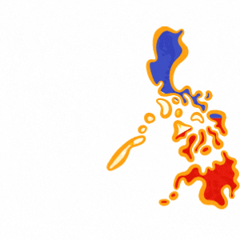
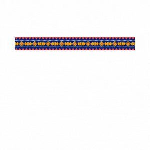
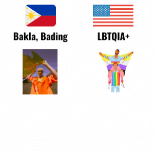
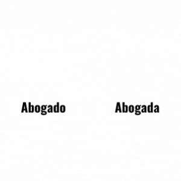

Ano ang wika?
saan ito ginagamit?

dayalek ≠ wika
ang bisaya o cebuano ba ay dayalek?

Pananaw-mundo
at pagbuo ng identidad

Kultura
Kultural na diversidad

Kasarian
Paano nakikita ang kasarian sa wika?

Pulitika
siyensya ng pamamahala